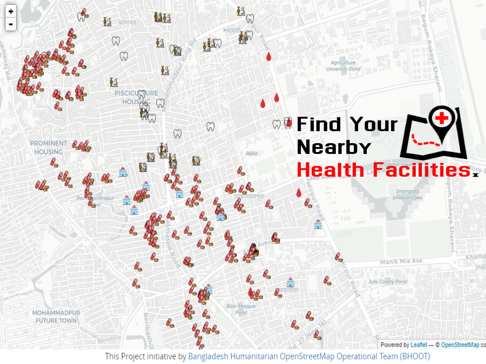

Objective
A health facility is, in general, any location where healthcare is provided. Health facilities range from small clinics and doctor's offices to urgent care centers and large hospitals with elaborate emergency rooms and trauma centers. The number and quality of health facilities in a country or region is one common measure of that area's prosperity and quality of life.

In populated country urban access to health services is a complex issue that often leaves the urban poor more vulnerable and disadvantaged than their rural counterparts. Urban dwellers live in a more densely crowded area, where even they do not know about the nearest health facilities in their emergency moment. As urban areas are more densely and crowded People sometimes don’t know about the nearest Health Care Facilities which causes utter sufferings for the patients and their relatives.Bangladesh is a densely populated and rapidly developing country in the world. Every year thousands of people come across to urban areas like Dhaka to earn their livelihood. As a result the importance of Health Care Facilities are increasing day by day. The health care facilities like Hospital, Clinic, Diagnostic center, Dental Care, Pharmacy or Blood Banks play a vital role in Dhaka city for it’s big population to provide fundamental human right.The newcomer people even sometimes local people do not know the actual position of Health Facilities in their crisis moment. In these circumstances people especially women, children and aged people face unbound misery because of unknowing actual location of Health Facilities. In Dhaka City many people die because their relatives or responsible people can not reach at hospital in proper time. It sometimes happen because of their ignorance of where the health facilities are located.In this Situation we are not only facing human pain and suffering, we are wasting our valuable time and economy even sometimes we lose lives of our lovable relatives. In our emergency moment we often forget the name and location our nearest Health Facilities. From this point a Humanitarian Map can give tremendous support to find out the desire Health Care center. Bangladesh Humanitarian OpenStreetMap Operational Team (BHOOT) voluntarily organization who are contributing on OpenStreetMap to help out vulnerable people all over the world through physical and remote support.To reduce human sufferings, pains and miseries Bangladesh Humanitarian OpenStreetMap Operational Team (BHOOT) have taken an initiative project using OpenStreetMap platform to improve Humanitarian Rights and Public Health Facilities for the people to ensure social and humanitarian responsibilities for the people of all classes. Where Bangladesh Humanitarian OpenStreetMap Operational Team (BHOOT) added 9 types of Health Facilities Data - Hospital, Clinic, Pharmacy, Dental Clinic, Private Doctor, on the open platform OpenStreetMap as their humanitarian work.Through this footpace of BHOOT Bangladesh Government will get a vast and statistical knowledge about the number, location and status of the Health Facilities around Dhaka City of Bangladesh. This data will show how many Health Facilities are needed and where should they situated as required according to density of population.This initiated project is also a part of making Digital Bangladesh by which people will find amenities in their daily needs . Now a days every sector like social and economical and commercial stage Map Data plays a very important role for the success, uses and potentially. So, the contribution of Bangladesh Humanitarian OpenStreetMap Operational Team (BHOOT) will help all stages of human life and improve the social and economical status of Bangladesh. As well as this data will enrich OpenStreetMap data with a chank of qualitiful field level data.
Chart View
Map View